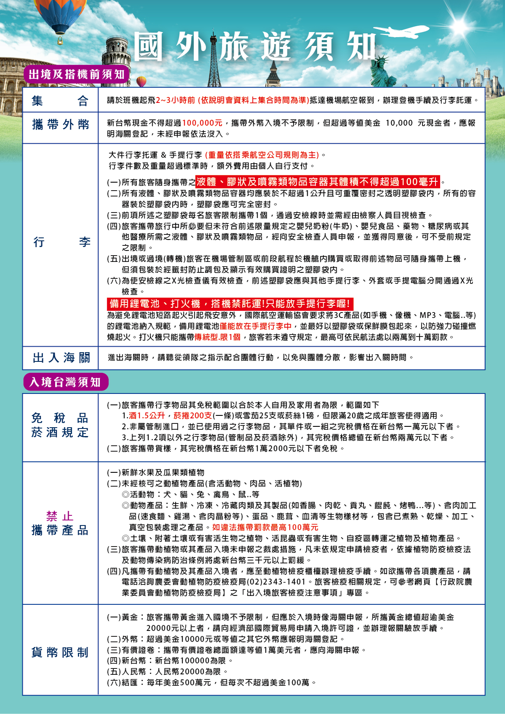
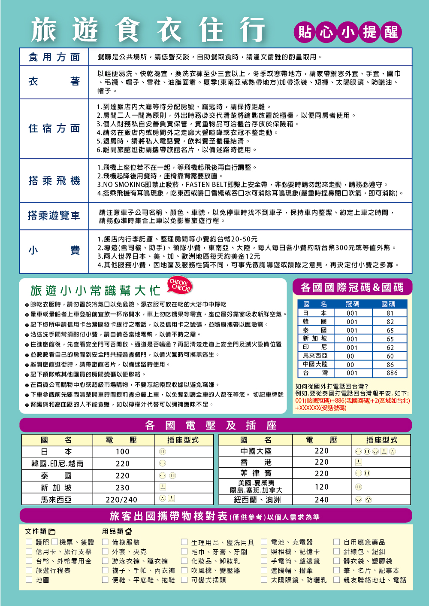
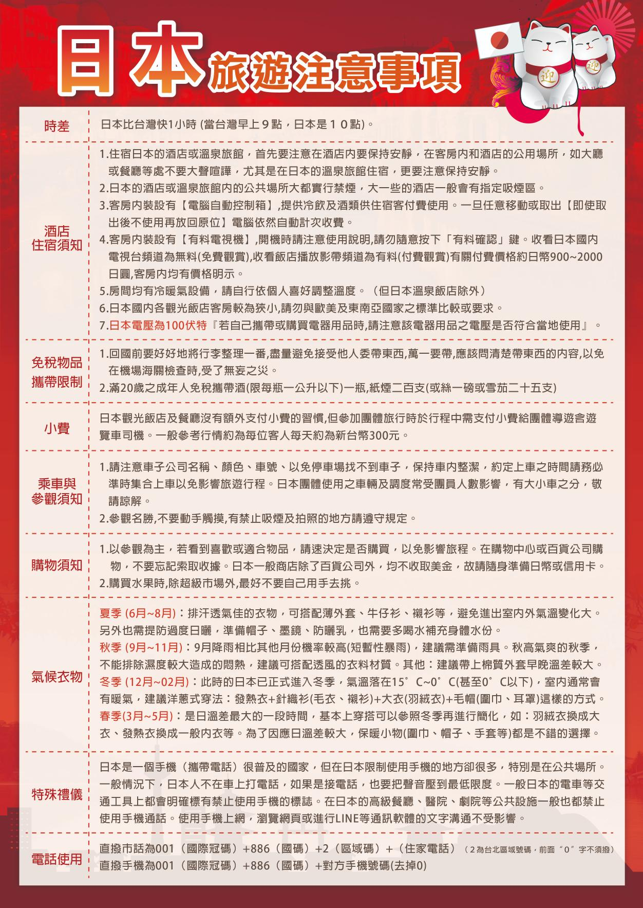
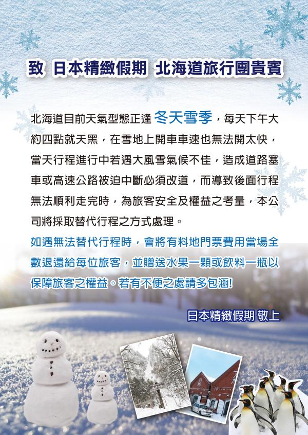
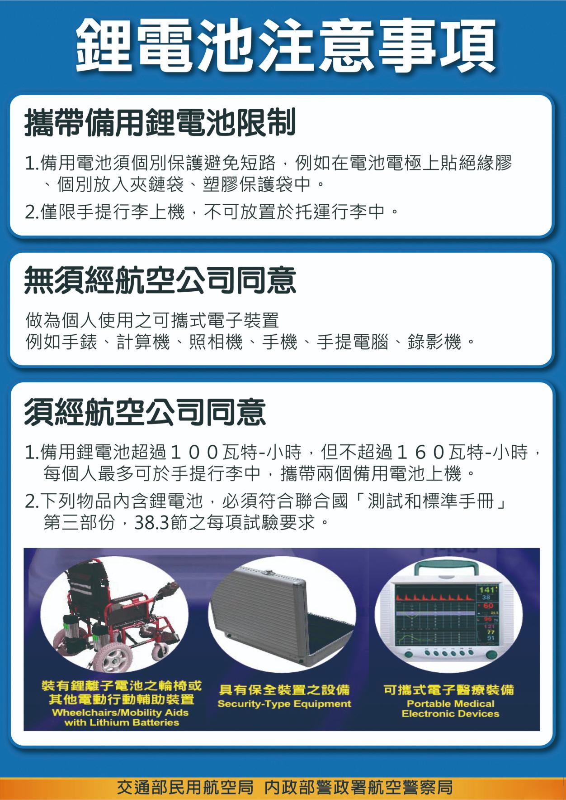
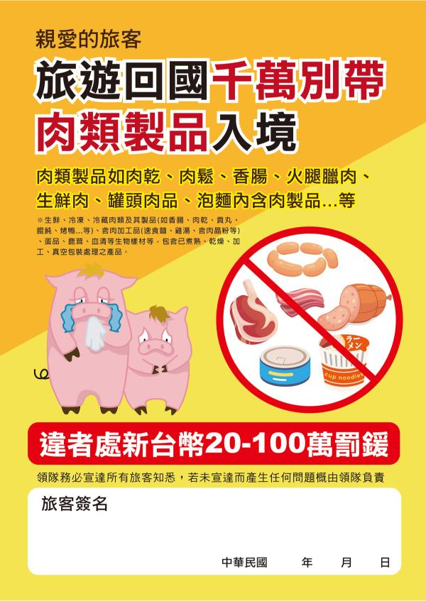

集合資訊
集合時間
05:00
集合地點
桃園國際機場第一航站 星宇航空 團體櫃台前集合
識別牌
奇跡旅遊導遊 鍾佩綺
0922-758-767
機場專員曾仁杰 0910-008-139
DAY 1 3/12
載入中...
別府
台北→熊本機場
俯瞰阿蘇火山口~大觀峰展望台
九重森林公園滑雪場～特別安排雪盆體驗(提供雪盆2人一個)
別府鐵輪溫泉 Spa Hotel 鶴見
TEL: 0977-66-0561
早餐 X
午餐 機上美食
晚餐 飯店內會席料理
DAY 2 3/13
載入中...
福岡
別府海地獄
全日本女性票選 NO.1 景點~湯布院
金鱗湖~山 林湖畔小徑散策
道之驛浮羽
柳川遊船
Route Inn Grantia 太宰府
TEL: 092-925-5801
早餐 飯店內早餐
午餐 湯布院特色御膳
晚餐 三大蟹吃到飽+軟性飲料無限暢飲*用餐時間 70 分鐘
KMJ20260312
DAY 3 3/14
載入中...
福岡
赤間神宮
關門海峽海底隧道
門司港懷古地區漫步
JR 門司港車站
免稅店
LaLaport 福岡
Cross Life 博多柳橋飯店
TEL: 092-733-3900
早餐 飯店內早餐
午餐 北九州燒咖哩風味料理
晚餐 為方便 OUTLET 逛街，敬請自理
DAY 4 3/15
載入中...
熊本
日本學問之神~太宰府天滿宮
冬季採果樂~現採草莓體驗
萌熊電車 Kumamon(上熊本站→北熊本站)
櫻之馬場城彩苑~眺望熊本城
熊本熊廣場
ARK飯店 熊本城前
TEL: 096-351-2222
早餐 飯店內早餐
午餐 熊本豬肉壽喜燒
晚餐 為方便遊玩，敬請自理
DAY 5 3/16
載入中...
熊本
熊本機場
溫暖的家
早餐 飯店內早餐
午餐 機上美食
晚餐 X
本網頁測試中，如有勘誤請依照紙本說明會資料為準
祝您旅途愉快 Have a Nice Trip
祝您旅途愉快 Have a Nice Trip
服務費說明
本行程導遊司機的服務費為，每位旅客每天 新台幣 300 元， 5 天共 新台幣 1,500 元， 請一律在日本當地支付給導遊。
航班資訊
去程 JX8463/12
07:30
TPE 桃園
10:35
KMJ 熊本
回程 JX8473/16
11:45
KMJ 熊本
13:25
TPE 桃園
住宿資訊
-
Day 1
別府鐵輪溫泉 Spa Hotel 鶴見
0977-66-0561 -
Day 2
Route Inn Grantia 太宰府
092-925-5801 -
Day 3
Cross Life 博多柳橋飯店
092-733-3900 -
Day 4
ARK飯店 熊本城前
096-351-2222 -
Day 5
溫暖的家
* 點擊飯店可顯示給司機看的卡片
天氣穿著
3月氣溫約6-13度，山區會更冷且有雪。請務必準備保暖大衣、手套、圍巾、毛帽及防滑鞋。
貨幣匯率
日幣(JPY)。建議台灣先換匯。許多店家可刷卡或用PayPay(街口)/LINE Pay/Suica。
行李與須知
嚴禁攜帶肉類入境。行動電源請隨身攜帶。每人托運行李為1件23公斤，手提行李為1件7公斤。
注意事項







* 請詳閱以上注意事項
本網頁測試中，如有勘誤請依照紙本說明會資料為準
祝您旅途愉快 Have a Nice Trip
祝您旅途愉快 Have a Nice Trip
旅人檢查清單
重要文件
3C 產品
⚡ 日本電壓為 100V，請確認您的電器(如吹風機)是否支援！
個人 / 盥洗 / 藥品
每日退房檢查 (防止遺落)
手指日語
基礎會話
🛍️ 購物結帳
🍽️ 餐廳用餐
緊急聯絡 & 支援
訪日外國人
醫療 & 急難熱線
醫療 & 急難熱線
Japan Visitor Hotline (JNTO)
050-3816-2787
* 24小時對應 (英/中/韓)
即時匯率換算
0
匯率參考: 1 JPY ≈ ... TWD
免稅湊單計算機
目前總計
¥0
還差 ¥5,500
購物記帳 (總表)
總花費 (JPY)
¥0
約台幣 NT$ 0
本網頁測試中，如有勘誤請依照紙本說明會資料為準
祝您旅途愉快 Have a Nice Trip
祝您旅途愉快 Have a Nice Trip